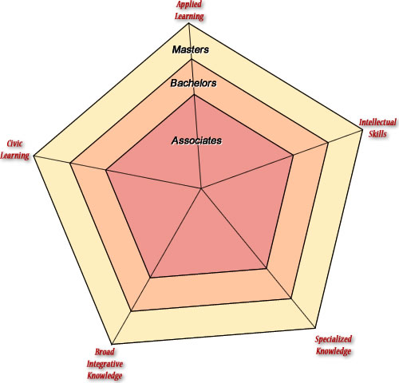

Institutions
- Blue Mountain Community College
- Central Oregon Community College
- Chemeketa Community College
- Clackamas Community College
- Clatsop Community College
- Columbia Gorge Community College
- Klamath Community College
- Lane Community College
- Linn-Benton Community College
- Mt. Hood Community College
- Oregon Coast Community College
- Portland Community College
- Rogue Community College
- Southwestern Oregon Community College
- Tillamook Bay Community College
- Treasure Valley Community College
- Umpqua Community College
- Eastern Oregon University
- Oregon Institute of Technology
- Oregon State University
- Portland State University
- Southern Oregon University
- University of Oregon
- Western Oregon University